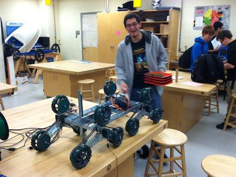

Department Overview
The Technology Education (and Engineering) Department is a prominent and growing department at the Downingtown STEM Academy. The department educates hundreds of students from all four grades in four different classes taught by six teachers in the department. These classes instruct students on the usage and application of the design process, prototype development techniques, and also develops students’ knowledge in a variety of different types of engineering such as electrical, mechanical, architectural, and many more.

This course provides an introduction to engineering and technology design processes. Students create ideas, designs, develop innovations and engineer practical solutions. It also provides students with the opportunity to apply technological concepts and processes in order to creatively solve problems and innovate designs. This course will utilize students’ Mathematics and Science skills from concept to production and evaluation in all aspects of the processes.
This course provides an in - depth look into communication technologies and processes, and requires students to create and use technology effectively and to creatively communicate through a variety of avenues. The course also exposes students to digital communications, digital photography, web page design, video technologies, editing software, and advertising. The course provides a hands - on introduction to many forms of software such as Photoshop, Illustrator, InDesign, C#, Java, iMovie, Final Cut Pro, and more.
Engineering Technology will offer students the opportunity to understand and apply knowledge and skills required to link science, technology, engineering and mathematics together and apply it to solve problems . The course also provides students an opportunity to engage in real world case studies and learning activities that focus on the engineering process and making the world a better place to live and work. This course will maintain a focus on how engineers apply their creativity, resourcefulness, mathematical, scientific, and technical knowledge and skills in the creation or refinement of technological products and systems. A key approach will be the use of a sequential and iterative design and development process to solve authentic engineering tasks and problems.
To design with technology is to use human ingenuity in selected activities in order to meet needs and find solutions. This can be achieved through existing or new technologies. Design consists of gathering information about the problem or opportunity, processing that information, and planning for some kind of intervention either by modifying what is already there or by introducing something new. The designer is interested not just in the material environment but also in the social, technological, economic, environmental, political, legislative and ethical considerations that affect people’s priorities.
Diploma Programme design technology is based on a model of learning that incorporates knowledge, skills and design principles in problem - solving contexts, while at the same time maximizing the use of local and readily available resources. It assumes no previous experience in either technology or design. The intent is not solely the acquisition of knowledge about design and technology, which may change or become outdated, but it is about learning how to adapt to new experiences and to approach problems with the appropriate skills and the relevant techniques to identify the important elements and, crucially, to develop the optimum solutions. The design cycle is at the core of the course, and it is expected that students will use this process in the practical investigative work as well as in the theory. Each element in the design cycle represents an aspect of design technology, which, when viewed together, constitutes a holistic approach. Any given element is therefore only to be seen in the context of the whole process.
Technology relies on the laws and properties of nature and the accumulated knowledge of technology to create new products, techniques and systems. Design technology sits comfortably in the Diploma Programme experimental sciences, because the design cycle involves inquiry, and students need to study scientific principles in order to understand advances made in society and to be able to speculate what might be achieved in the future. The range of syllabus topics has been chosen to ensure a balance and interest for all students regardless of their gender and previous experience. It includes options that will be attractive to all students, not only those whose future studies will be in the field of science, technology or engineering, and it offers opportunities for in - depth studies of relevant technological issues for those who will study such subjects.
The design cycle to technology is the equivalent of the scientific method to science. The emphasis is therefore on using the design cycle to solve a problem or to realize an opportunity using relevant information and production techniques. Practical and/or investigative work centers on developing skills and ideas, the properties of materials, mechanisms, control systems and production techniques, as they apply to constructing a product or system.